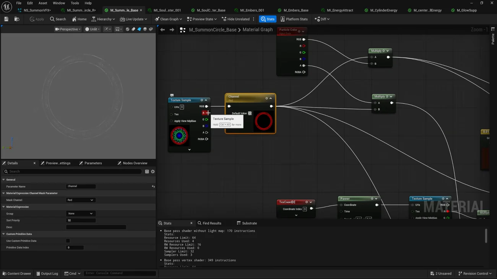
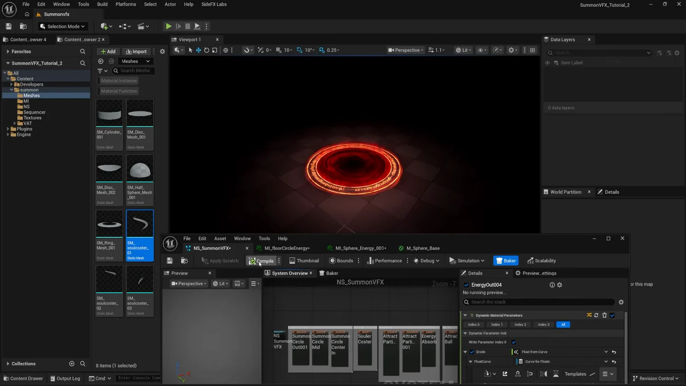

Summon VFX 4 — Unreal でマテリアルと Niagara を組む
出典: Summon VFX | 4 | Import to Unreal （SideFX 公式チュートリアル Realtime Summon VFX の第4回 / 講師 Cesar Merchan さん / Unreal Engine 5.7 / 42:16 / 英語）。 このページは、上記の動画を見ながら自分用にまとめた日本語の学習メモです。SideFX 公式の翻訳ではありません。 前回はVellum で布をドレープして破るでした。
この回で扱うこと
- 持ち込みの設定。ここを間違えると後の全部が狂います
- Houdini 側で用意したパックテクスチャを Unreal でどう使うか。共通パターンが1つあります
- Niagara システム2つの役割分担と、Loop Delay で第2部を3秒後に始める組み方
- 火の粉を集める Point Attraction Force と、開いた瞬間に散らす Vortex Force
- Parallax Occlusion Mapping でポータルに深さを出すこと
- 前回の VAT を受け取るマテリアルの作り方。Num Customized UVs = 5 が鍵です
- 煙は Labs のテンプレートを複製して使うという前提になっていること
42分あってエミッタの数も多いのですが、materialの作り方はほぼ1パターンの繰り返しです。 そこを最初に押さえてしまえば、あとは「どのエミッタで何を変えたか」を追うだけになります。
1. 持ち込みの設定
ここは動画の中でいちばん実用的な部分だと思います。既定のままだと正しく動きません。
メッシュ
| 設定 | 値 | なぜ |
|---|---|---|
| Vertex Color Import Option | Replace | 前回メッシュに焼いた頂点カラーを、そのまま持ち込むためです |
| Import Materials | オフ | マテリアルは Unreal 側で作るので、要りません。オンだと余計なものが増えます |
取り込んだらスタティックメッシュを開いて、Vertex Color 表示で頂点カラーが入っているかを確認します。 第1回で仕込んだグラデーションがここで生きているかどうかの確認です。
テクスチャ
| 種類 | 設定 |
|---|---|
| パックテクスチャ | sRGB をオフ、Compression Settings を Masks に |
| 法線マップ | Compression Settings を Normal map に |
sRGB をオフにする理由は、パックテクスチャの中身が「色」ではなく「値」だからです。 R に模様、G に別の模様、B にさらに別の模様を詰めているので、 色として補正されてしまうと数値が変わってしまいます。
スクリプトに任せられるもの
フリップブックと VAT のテクスチャは設定項目が多いのですが、 Labs プラグインがスクリプトを用意してくれています。
| 対象 | 操作 | 設定される内容 |
|---|---|---|
| フリップブック | 右クリック → Scripted Asset Actions → Houdini Config Texture for Flipbook | Compression Settings を BC7（高品質圧縮）に、sRGB をオフ |
| VAT のテクスチャ | 右クリック → Scripted Asset Actions → Houdini Config Textures for HDR | Compression を HDR に、sRGB をオフ |
VAT のテクスチャは Houdini から HDR で書き出しているので、HDR 用のほうを選びます。 加えて Filter を Nearest にしておくのが良いそうです。 頂点の位置が入っているテクスチャなので、補間されると位置がずれます。
スクリプトが何を設定しているかは実行後に確認できるので、 中身を見てから使うのが安心だと思います。
2. マテリアルの共通パターン
この回のマテリアルはほとんど同じ骨格をしています。

| 段 | ノード | 役 |
|---|---|---|
| 1 | Texture Sample | パックテクスチャを読みます |
| 2 | Channel Mask Parameter | どのチャンネルを使うかをパラメータで選びます。Mask Channel = Red など |
| 3 | Multiply | Particle Color を掛けます。色は Niagara 側から来ます |
| 4 | Multiply | Emissive の強さを掛けます |
| 5 | Multiply | 不透明度に頂点カラーを掛けます（第1回で焼いたもの） |
| 6 | Depth Fade | メッシュと床の硬い境目を消します |
| 7 | Fresnel | 縁をなめらかに抜きます |
| 8 | Dynamic Material Parameter | 侵食（エロージョン）を Niagara から駆動します |
Channel Mask Parameter がパックテクスチャの受け皿です。 1枚のテクスチャから「今回は R」「こちらは G」と選ぶだけで別の模様になります。 第2回でわざわざ詰めた意味がここで出ます。
Depth Fade と Fresnel はほぼ全部のマテリアルに入っています。 板や円盤が床に刺さっている境目が硬く見えるのを消すためで、 リアルタイムの見た目を整える定番の手当てだと思います。
3. 第1部 — エネルギーを集める
Niagara システムは2つあります。1つ目（NS_SummonVFX）が召喚エフェクト全体、
2つ目がキャラクターの登場です。まずは1つ目の中身です。
円の模様 3枚
| 設定 | 値 | 狙い |
|---|---|---|
| スポーン | Spawn Burst | 一度だけ出します |
| Sprite Facing and Alignment | 床に合わせる | 地面に貼り付いた模様にします |
| Kill Particles | オフ | ポータルが開いているあいだ消えないようにします |
| Sprite Rotation Rate | 速く始めて 100 前後へ | 最初に勢いよく回して、だんだん一定の回転に落ち着かせます |
| Dynamic Material Parameter | 侵食を駆動 | 模様がじわじわ現れます |
3枚のうち中と中心のものは同じ作りで Scale のカーブを −1 にします。 これだけで回転方向が逆になります。1枚は右回り、1枚は左回り、 もう1枚は右回りだけれど弱め、という具合に差を付けています。
ソーラークラスタ — テクスチャをスクロールさせる
ここは Mesh Renderer を使い、第1回で作った3つのメッシュを全部登録します。
マテリアルで面白いのはUV のスクロールの作り方です。 単純に Panner を使うのではなく、こうしています。
- テクスチャのアドレスモードを Clamp にします（今回はタイリングしたくないので）
- UV に Tiling の値を掛けます
- UV の2成分を分離します
- R（U）はそのまま、G（V）は 1 から引いて値を足します
なぜ 1 から引くのかという説明が丁寧でした。 そのまま Panner で流すと値が 0 から −1 に動きます。 1 から引いておけば 1 から 0 に動くので、 Niagara から渡す値を 0〜1 の範囲で扱えます。
扱いやすい値の範囲に合わせるための一手間で、こういう細かい配慮が要所だなと思います。
| Niagara 側の設定 | 値 |
|---|---|
| Spawn Rate | 8 |
| Life / Lifetime | Mean と Max を低めに |
| Mesh Scale | Random Uniform 1〜2 |
| メッシュのインデックス | 0〜2（3つのメッシュから引きます） |
| Initial Mesh Orientation | ランダムに散らします |
| Scale Color | フェードイン・フェードアウト |
| スクロール速度 | パーティクルごとにランダム。速いものと遅いものが混ざります |
集まってくる火の粉 — Point Attraction Force
ここで第2回の2×2 アトラスが効きます。 動画の言い方だと「ただの球や退屈なスパークのテクスチャを使わずに済む」ためです。
- Sprite Renderer にアトラスのマテリアルインスタンスを設定します
- Sub Image Index を Distribution Weight で振り、 インデックス 0 か 3 を引かせます
- Shape Location で球の半径上に発生させます
- Point Attraction Force を、最初は効かせず、だんだん中心へ引くように上げていきます
- Curl Noise を少しだけ足します
引力を時間で立ち上げるのがこのエフェクトの芯だと思います。 最初はふわふわ浮いていて、やがて中心に吸い込まれていく、という流れがこれで作れます。
吸い込みの円盤と、中心の球
円盤は第1回の disc メッシュに、ノイズを X と Y にタイリング・パンニングしたマテリアルを当てます。 Emissive はテクスチャからマスクの G を引いたもの、 不透明度は Particle Color のアルファと頂点カラーを掛けたものです。 最後に Dynamic Material Parameter を引いて侵食させます。
中心の球は2種類のマテリアルを使います。
| 1つ目 | ノイズを Vector to Radial Value で U に渡して放射状にし、 Radial Gradient Exponential を掛けて外側を切ります |
| 2つ目 | Radial Gradient Exponential だけの単純な光球です |
エミッタ側は速度を持たせません。中心に留めたいので、動かす要素をあえて入れていません。 代わりに Camera Offset を少し入れて、他のものより手前に来るようにしています。
4. 第2部 — ポータルが開く
Loop Delay で3秒後に始める
第2部のエミッタには Loop Delay を入れて、 第1部が終わるタイミング（3秒後）にまとめて開始させます。
1つの Niagara システムの中で「エネルギーを集める」→「ポータルが開く」という 2段構成を作るのに、時間軸をずらすだけで済ませています。 シーケンサ側でタイミングを取るより、システム内で完結していて分かりやすいと思います。
ポータル本体 — Parallax Occlusion Mapping

ポータルには深さがあるように見せたいので、 Parallax Occlusion Mapping を使います。
| 入力 | 値 |
|---|---|
| Texture Object | Ramps のテクスチャの B チャンネル |
| Height Ratio | 0.1 |
| Min / Max Steps | 調整 |
Height Ratio について、動画がノードのツールチップをそのまま読み上げています。 「高さマップが幅に対してどれくらい深いか。典型的な値は 0.005 から 0.1」。 講師の推奨は 0.2 から 0.1 くらいで、深くしすぎない範囲に収めています。
そのうえで、ノイズで歪ませ、Particle Color を掛け、 Lerp で「その結果」と「真っ黒」を頂点カラーで混ぜます。 これがポータルの中心の黒い穴になります。 第1回でメッシュに焼いたグラデーションが、そのまま穴の形を決めているわけです。
開いた瞬間に散らす — Vortex Force
火の粉のエミッタをもう1つ作りますが、こちらは Point Attraction Force ではなく Vortex Force を使います。 Force Amount と Origin Pull Amount を調整します。
第1部で中心に引き寄せていたものを、第2部では渦で散らす。 同じエミッタ構成で力だけを差し替えると流れが反転する、という分かりやすい対比です。
回るリングと光条
| 要素 | 作り |
|---|---|
| リング | ring メッシュ。Update Mesh Orientation で回転させ続け、ライフタイムは無限。 マテリアルはノイズをパンニング＋タイリングして別のノイズで歪ませ、 反転した Generated Band を掛けます。不透明度は ramps × 頂点カラー × Particle Color |
| 光条 | cylinder メッシュ。ノイズをスクロールさせ、UV にタイリングを掛けます。 Four Vector を使っているが実際に使うのは R と G だけ（Append Vector と同じ結果）。 最後にランプを掛けて上をフェードさせ、メッシュのスケールを 0 → 1 にしながら回します |
リングは2つ用意して、片方を赤く、もう片方を黒く保っています。 同じ形でも色で役割を分ける、という使い方です。
飛び散る破片
破片には既存のマテリアル（edge energy、cylinder energy）を再利用し、 球用に2つだけ新しく作ります。作りは他と同じ「ノイズを XY にパンニングして歪ませる」レシピです。
違うのは寿命の扱いです。
| ライフタイム | |
|---|---|
| ポータル本体・リング・光条 | 無限（開いているあいだ残す） |
| 破片 | 寿命が来たら消す。値もかなり低く、形を素早くスケールさせます |
「残すもの」と「一瞬で消えるもの」を分けているだけですが、 これがあると開いた瞬間の衝撃と、開き続けている状態が両立します。
5. VAT のキャラクターを受け取る
前回 Houdini から書き出した VAT を、Unreal 側で動かすためのマテリアルを作ります。 使うのは Labs プラグインの Houdini Vertex Animation Soft Body Deformation です。
| 設定 | 値 | なぜ |
|---|---|---|
| Num Customized UVs | 5 |
ここが鍵です。UV1 が1番目、UV2 が2番目…と対応するので、必要な数だけ確保します |
| Tangent Space Normal | オフ | 法線を VAT 側から与えるためです |
| Normal | 関数の出力を接続 | — |
| World Position Offset | 関数の出力を接続 | 頂点をここで動かします。VAT の本体です |
マスターマテリアルを保存すると、マテリアルインスタンスに Houdini Vertex Animation Texture という項目が現れます。
| Playback Speed | 再生速度 |
| Houdini FPS | Houdini 側で作業した FPS。ここが合っていないと速度が狂います |
| Position / Rotation Textures | 書き出したテクスチャを差し込みます |
これを体用と布用で別々のマテリアルインスタンスとして作り、 それぞれのメッシュに割り当てます。前回 VAT を2つ書き出したのはこのためです。
6. 第3部 — 登場の煙
2つ目の Niagara システムです。新しい要素は煙で、 第2回で作った 8×8 のフリップブックをここで使います。
テンプレートを複製して使う
煙のマテリアルは自分で組むのではなく、Labs が用意した Template Vat Advanced Base を複製して使います。 Plugins → SideFX Labs のマテリアルテンプレートの中にあり、 テンプレート自身に「これを複製して自分のフォルダに保存してください」と書かれています。
変えたのは次の点だけです。
| 箇所 | 変更 |
|---|---|
| Time | 2つのスカラー値を掛けます。1つは Flipbook Speed、もう1つは Start Frame |
| Base Color | Particle Color を直接繋ぎます |
| Emissive | 既定の入力 × Particle Color × 0.02 くらい（ほんのり光る程度に） |
| Opacity | 既定の入力 × Particle Color × Depth Fade |
マテリアルインスタンスには Houdini FB Textures の項目が出るので、 Houdini から書き出したフリップブックをそこに差します。 Motion Vector Scale はかなり低くしています。
煙のエミッタ4種
| エミッタ | 特徴 |
|---|---|
| 中心の煙 | 速度は低く、Shape Location は Torus。Drag を少し。 Scale Color を 0 → 1 → 0。Flipbook Speed を 0.1〜0.2 でランダムにし、 開始フレームもランダム（0 から始まるものと14から始まるものが混ざります） |
| 外へ広がる煙 | 速度を点から外向きに。円の模様の方向に合わせています。Camera Offset を少し |
| 引き伸ばした煙 | 非均等スケール（50〜200）でキャラクターに添わせます |
| 上へ昇る火の粉 | 速度は Z 軸方向のみの Linear。最小・最大をランダムに。Curl Noise を少し |
フリップブックの開始フレームをランダムにするのが効いています。 同じ 64 コマのループでも、パーティクルごとに違うコマから始まれば同じ動きに見えません。 テクスチャを1枚しか持っていないのに変化を作る、という発想がここでも出ています。
この回のまとめ
- メッシュは Vertex Color Import Option = Replace、Import Materials はオフ
- パックテクスチャは sRGB オフ + Compression = Masks。色ではなく値なので補正されると壊れます
- フリップブックと VAT のテクスチャは Scripted Asset Actions のスクリプトに任せられます（BC7 / HDR）
- VAT のテクスチャは Filter = Nearest。位置情報なので補間させません
- マテリアルは1パターンの繰り返しです。Texture Sample → Channel Mask Parameter → Particle Color → Depth Fade / Fresnel → Dynamic Material Parameter
- Scale カーブを −1 にするだけで回転方向が反転します
- UV スクロールは V を 1 から引いておくと、Niagara 側で 0〜1 のまま扱えます
- Point Attraction Force を時間で立ち上げると「集まってくる」動きになります。第2部では Vortex Force に差し替えて散らします
- Loop Delay で、1つのシステムの中に2段構成（3秒後に第2部）を作れます
- Parallax Occlusion Mapping の Height Ratio は 0.005〜0.1 が典型値。深くしすぎません
- ポータルの黒い穴は Lerp を頂点カラーで駆動して作ります
- 「残すもの」はライフタイム無限、「一瞬のもの」は寿命で消す。この分け方で衝撃と持続が両立します
- VAT は Num Customized UVs = 5、Tangent Space Normal オフ、World Position Offset に接続。Houdini FPS を合わせないと速度が狂います
- 煙は Labs の Template Vat Advanced Base を複製して使うのが前提です
- フリップブックは開始フレームをランダムにすると、1枚でも同じ動きに見えません
次の第5回は最後の4分です。Sequencer にカメラ・カメラシェイク・ Niagara 2つ・ポストプロセス・ライト・キャラクターを並べて1カットに仕上げます。